Latent | Brand film
Latent Studio
Your brand deserves better
Brand visuals made with AI,
directed like film.
Not your average AI post.
Latent is an AI-native design studio in Amman, making the visual side of a brand with generative tools in the hands of art directors.
We direct before we generate.
Minimal first, craft always,
built to ship.
Our job is to make AI work look shot, not typed: brand visuals that are minimal, simple and never average.
More about us →Focused direction.
Measured delivery.
Brief. You send the product, the palette and the mood. We answer with a written direction, not a mood board.
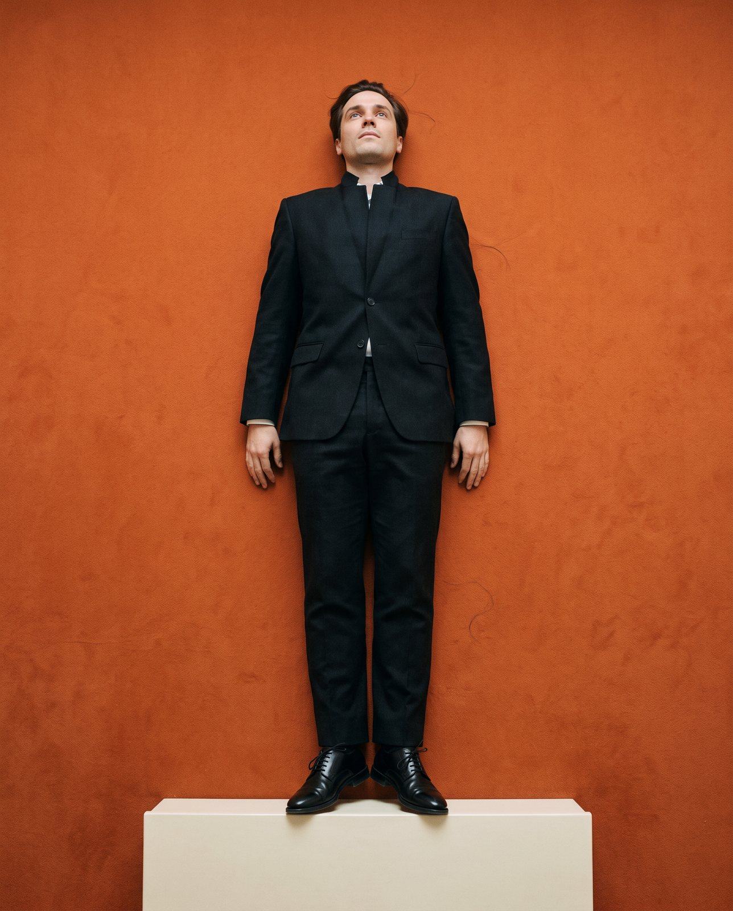
Direct. Light, lens, angle and story are decided before a single frame exists.
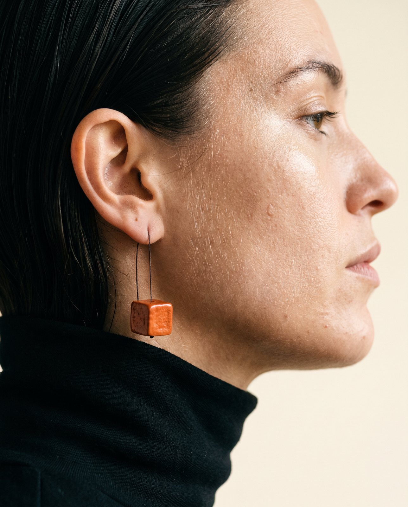
Generate. Hundreds of frames made from the direction, in our own models and styles.
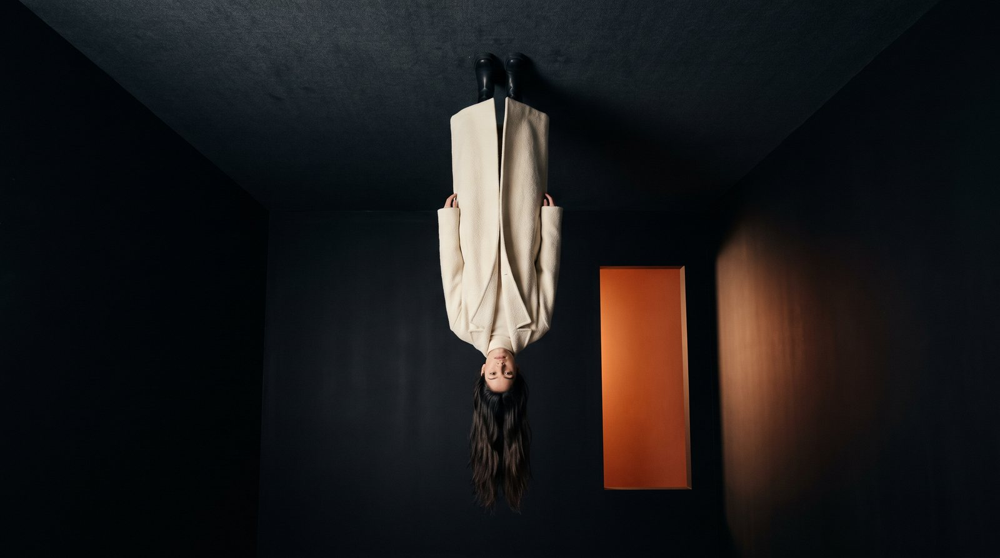
Select. Only the frames that look shot survive. Most do not.
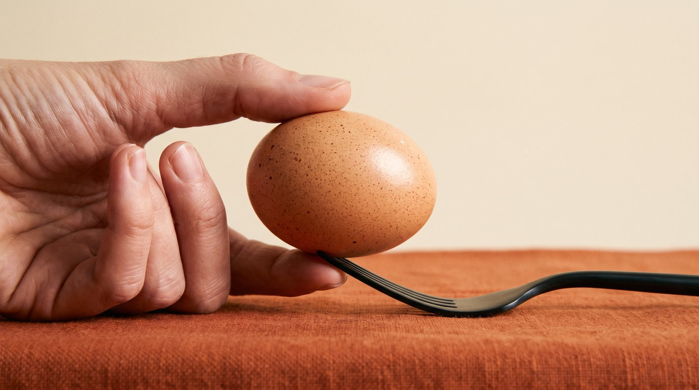
Craft. Retouch, grade and type by hand, so nothing reads as a prompt.
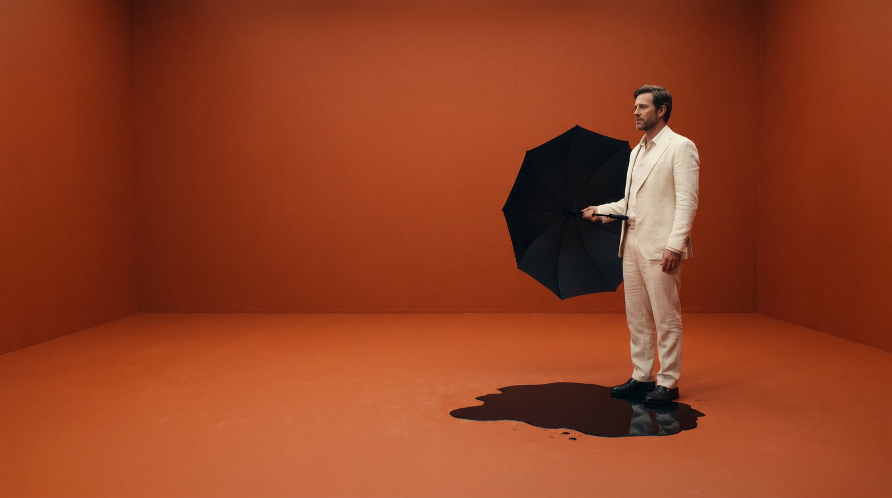
Deliver. Final files in every format you post, print or build with. Days, not weeks.
( The method )
What we skipNo set · no crew · no travel
no reshoot day
No set build, no crew, no travel, no reshoot day. A brief becomes a direction, the direction becomes frames, the frames become final files — in days. It is why a brand with one product and no budget for a shoot can still launch with a campaign that holds up next to one.
● What we make
( What we do ) 01 / 08
Single frames for the feed. One product, one light, one idea, shot like a still from a film and delivered in every size the platform asks for.
( What we do ) 02 / 08
A sequence that reads left to right. The cover pulls, the middle slides show, the last one asks. Written and framed as one story.
( What we do ) 03 / 08
Short films for the feed. Directed shot by shot and cut to the beat. No set, no crew, no reshoot day.
( What we do ) 04 / 08
A whole launch in one language. Key visual, feed, stories, print and screen, all from the same direction so nothing looks stitched on.
( What we do ) 05 / 08
The look that comes before the shoot. Colour, type, tone and the rules that keep every frame recognisably yours.
( What we do ) 06 / 08
One page that sells the product as well as the shoot does. Built to load fast, read clearly and be seen on a phone first.
( What we do ) 07 / 08
Your work, presented. A clean set of pages that shows what you make and gets out of the way.
( What we do ) 08 / 08
Anything a camera cannot reach or a budget cannot cover. Bring the idea; we direct it into frames.
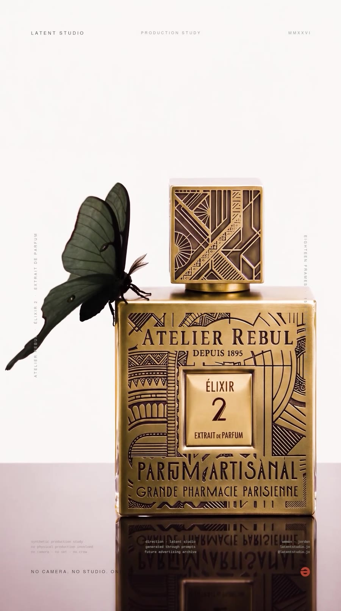
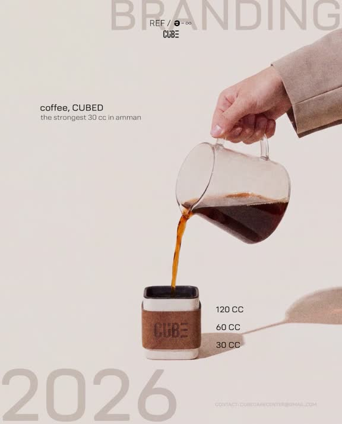
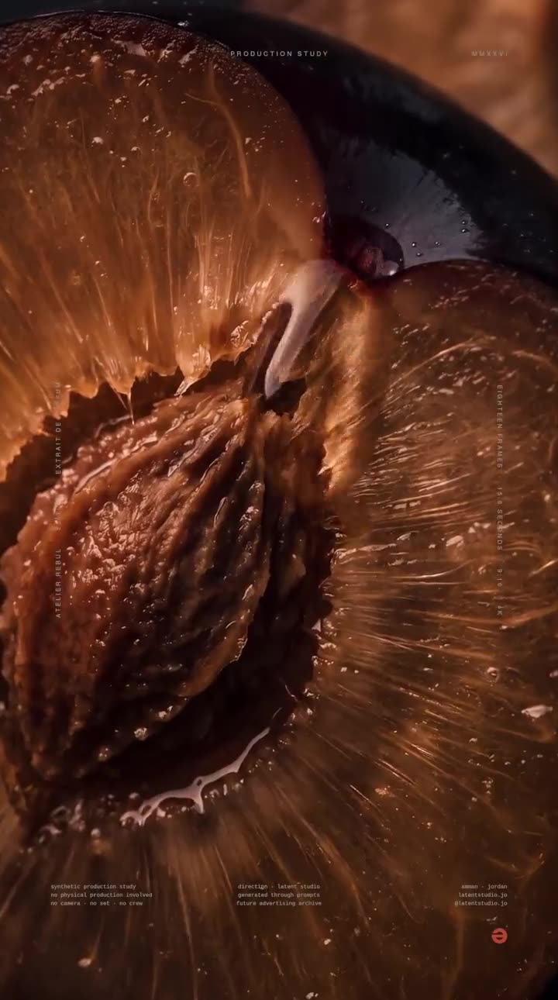
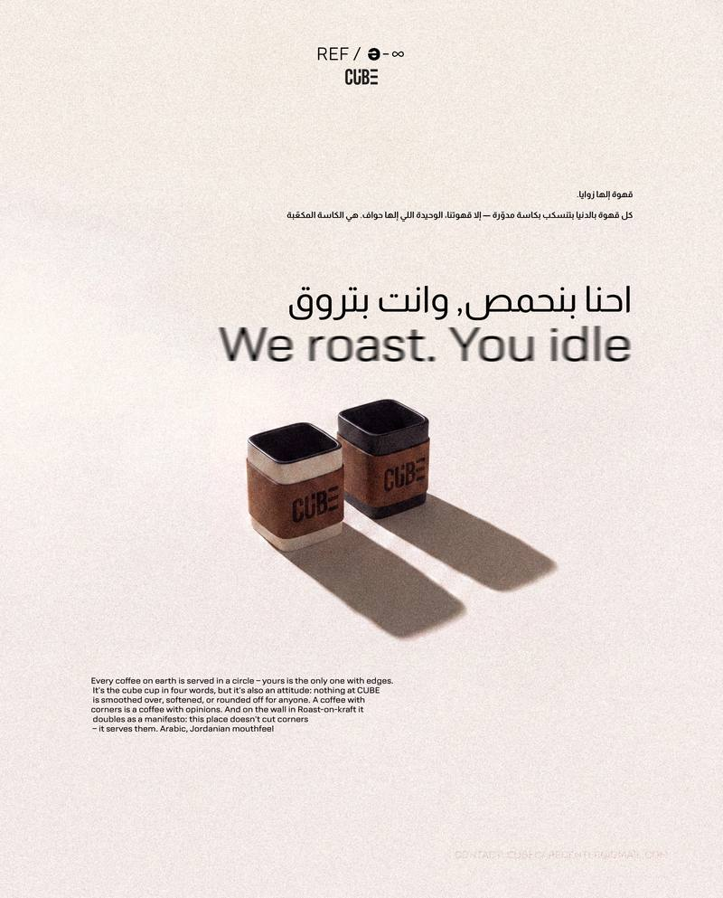
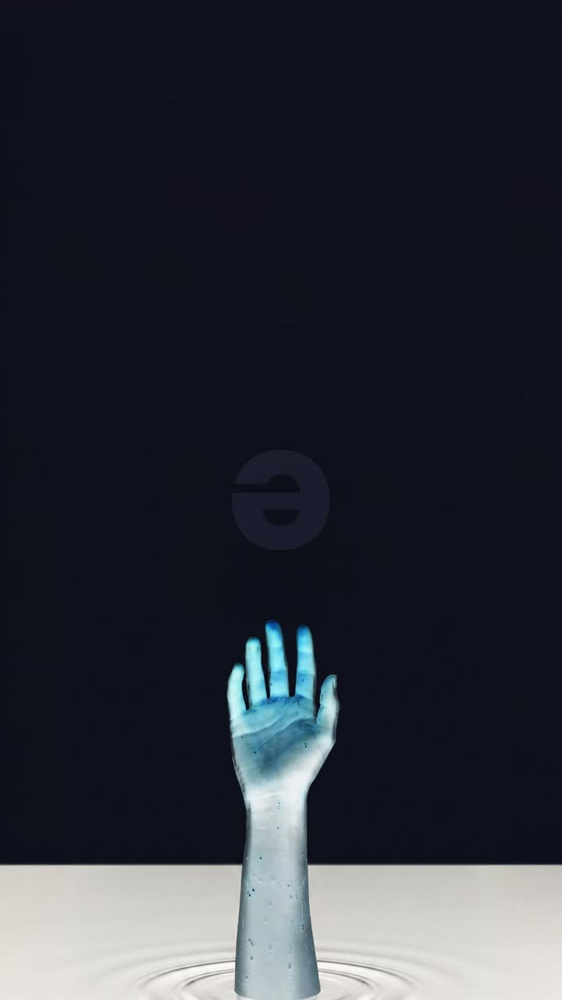
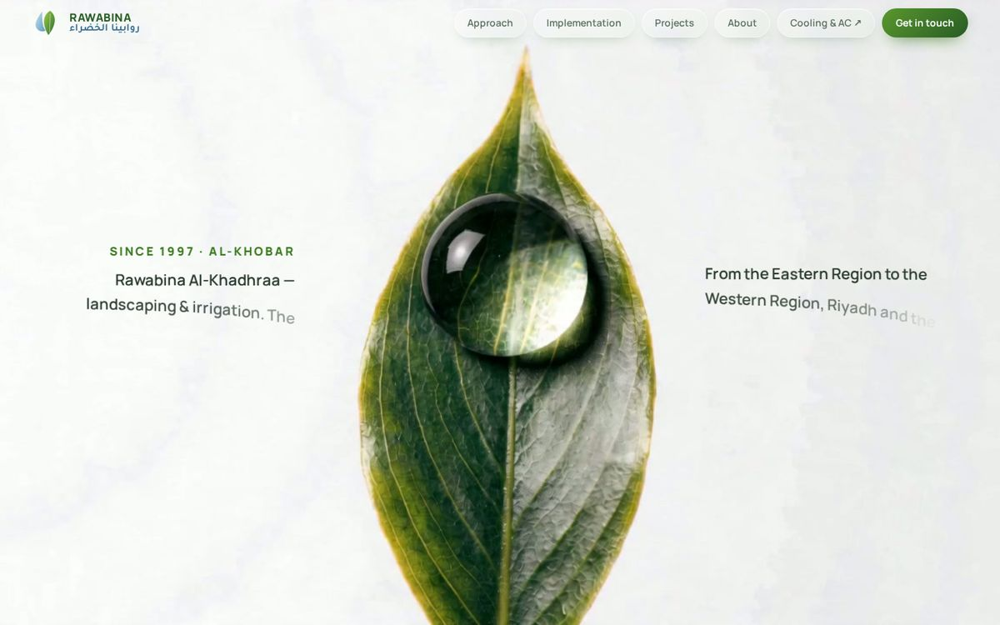
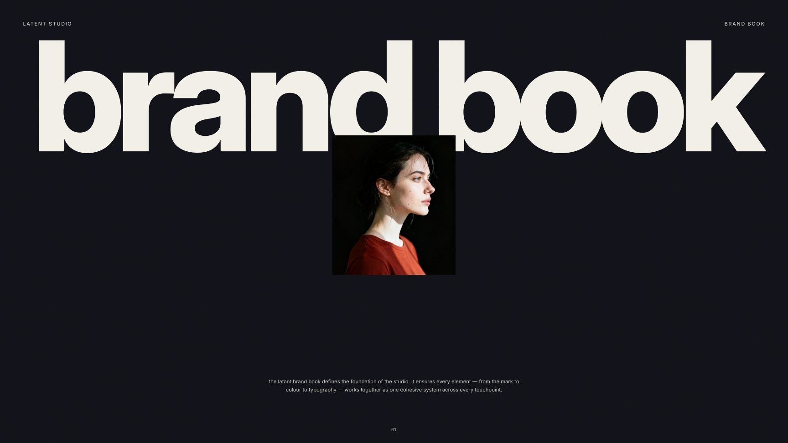
( The craft ) Direction first
Anyone can type a prompt, and it shows. We treat a generation like a shoot: real skin and real light, a camera that breathes, one flat field in the brand’s own colour, and one detail that is deliberately unexpected. Every frame is directed before it is generated, and only the frames that pass leave the studio.
Restraint · story before product · craft in every frame
( Four moves ) Every job, the same order
You send the product. We write the direction.
Light, lens, angle, story. Agreed before a frame exists.
Hundreds made. You see the ones that pass.
Every size, every placement. Days, not weeks.
( Prices ) What about them?
What about the prices? Ours sit comfortably inside the market, and every package costs less than the same pieces bought one by one. Tell us what you are launching and the list is in your inbox the same day.
Opens an email to the studio. The price list comes back the same day.
StudioLatent Studio
Amman, Jordan
Get in touchlatent-studio-ai.com
@latentstudio.jo
latentstudio.jo@gmail.com
+962 7 998 77131
AI direction & production
Price list 2026 · JD, exclusive of tax
Latent | Brand film